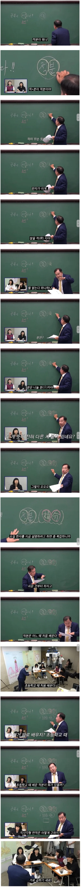
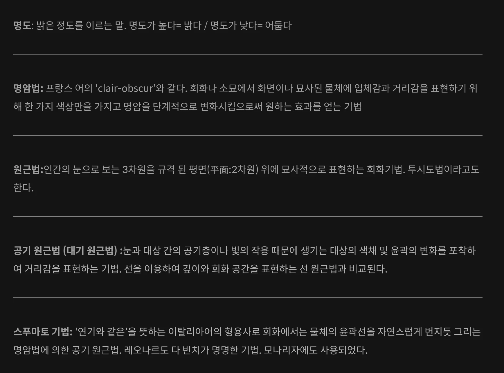
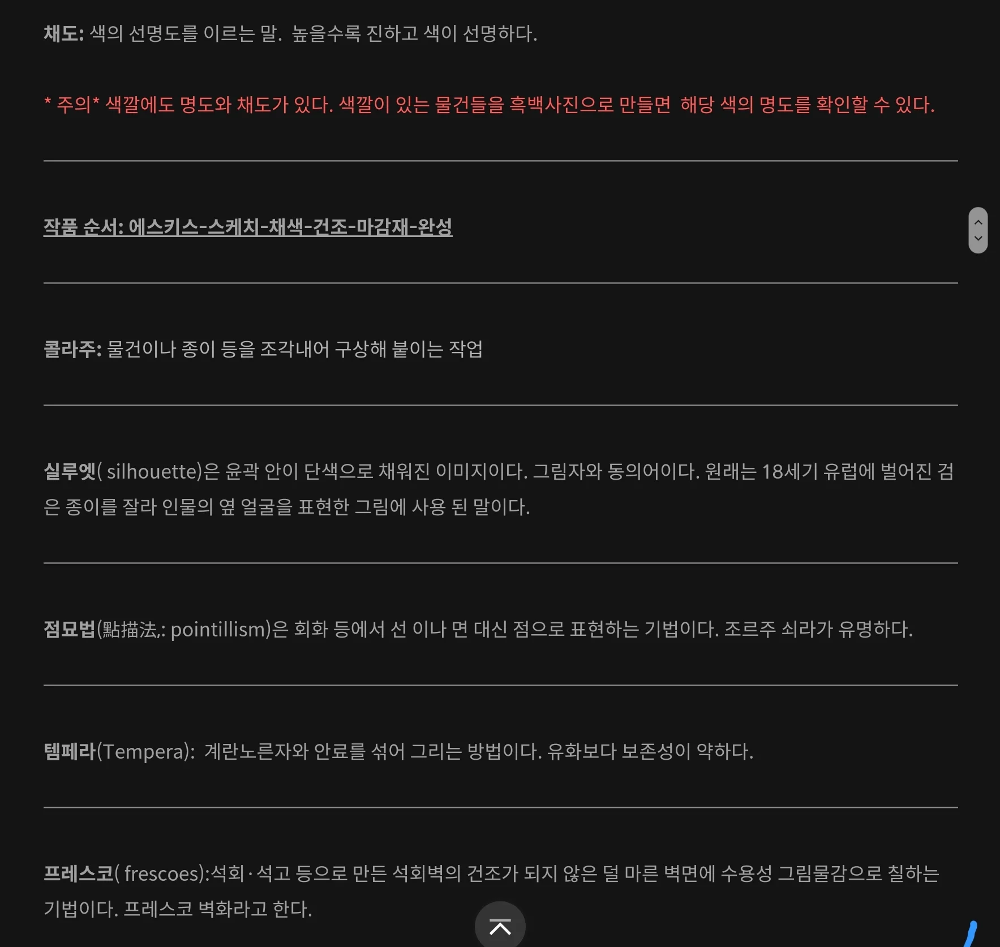
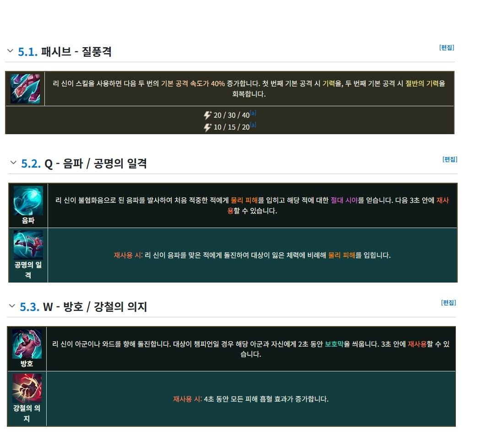
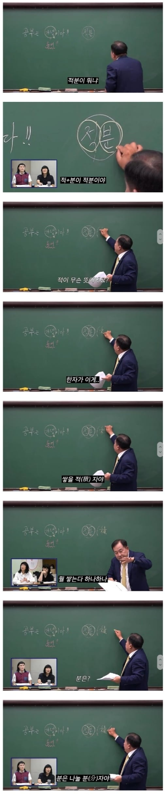

우리나라의 학문용어 상당수는 한자어로 되어있음
일본이 서양문물과 학문을 받아들이며 용어를 만들때 한자를 이용해 만들었고
이게 우리나라에서도 그대로 받아들이면서 많은 학문용어가 한자어로 됨.
적분 같은 경우도 쌓을 적, 나눌 분 으로 되어있는 용어고
적분(積分)은 함수의 그래프와 축 사이의 넓이나, 시간에 따른 변화량의 총합(누적값)을 구하는 수학 연산으로
한자 그대로 '잘게 부순 것(分)을 쌓는다(積)'는 뜻으로, 아주 작은 양들을 무한히 더해간다는 의미를 담고 있음.
직사각형의 넓이를 구할때 가로 x 세로 라고 하는것도
직사각형의 넓이를 구하는 공식 자체가 바로 적분의 가장 근본적인 출발점이자 원리이기 때문임
한마디로 아주 얇게 자른 직사각형을 계속 쌓아올려 그 넓이를 구한다는 거
쌓을 적과 나눌 분을 책을 통해서 이해할수도 있음
하지만 그럴려면 훨씬 더 많은 시간이 걸리고 더 많은 책을 읽어야 함
책에 적분, 면적, 축적, 누적, 실적 이런거 계속 한번씩 나올때마다 그거 사전에서 뜻 이해하고 그러면서 적이 쌓는다라는 의미라는걸 알게 되는데
이러면 시간이 오래 걸림
이걸 그냥 무식하게 최대한 짦은 시간에 주입시키는게 한자교육임..
積
그냥 이 한자 주고 부수가 禾 벼니 곡식(벼)을 차곡차곡 쌓아 올린다는 의미고 責 이 음을 담당하고 또 책임이라는 뜻이 있어
자기가 벤 벼의 볏단을 책임지고 모아서 "쌓는다"는 뜻의 글자가 된다는걸 알고
계속 쌓을 적 이라고 수십 수백번을 외우게 시킴
이러면서 적이라는 글자에 쌓는다 라는 의미가 있다라는걸 주입시킴
적토성산(積土成山): 흙이 쌓여 산을 이룸. 작은 노력이 지속되면 큰 성과를 거둘 수 있음을 비유합니다.
적소성대(積小成大): 적은 것이 쌓여 큰 것을 이룸. 작은 것도 모이면 크게 된다는 뜻입니다.
그리고 적이 있는 여러 단어나 여러 사자성어 가르치면서 또 한번 적이 쌓는다라는 의미가 있다는걸 강제 주입시킴


원근법이라는 단어도 보면
이게 뭘 원과 가까울 근으로 이루어진 단어임
遠
부수가 ⻌인데 발(족, 足)과 길(행, 行)이 합쳐진 글자로, 이 부수가 있으면 '길을 가다', '이동하다' 라는 뜻
오른쪽의 袁 (옷 길 원) 이 음을 나타내고 긴 옷을 입은 사람의 모습을 본뜬 글자인데
이게 부수와 합쳐져서 옷이 길게 늘어져서 멀다라는 의미를 보태고
이게 멀 원이 됨...
원근법은 멀고 가까움의 법이라는 얘기로 멀고 가까운 거리감을 표현하는 미술 기법이라는 얘기
물론 이걸 책을 여러권 읽으면서 원이라는 단어가 멀다라는 의미를 가지고 있다는걸 알아도 되지만 그럼 시간이 오래걸리고
한자는 저 멀 원 자를 보여주며 계속 멀 원 멀 원 외우게 시키다보니 훨씬 빠르게 강제주입이 됨.
어떤 단어의 의미를 빠르게 강제주입하는 교육으로는 아직 한자 교육만한게 없음...
우리나라 국어 교육에서 적 하나를 가지고 계속 쌓다는 의미를 주입하고 원 하나를 가지고 계속 멀다라는 의미를 주입하고
다른 한자용어들을 가지고 와서 계속 주입시키는 교육은 별로 없음

롤로 치면 책을 계속 읽는건 그냥 기술표 안보고 게임을 수백번 반복해서 익히는거...
물론 그렇게 해서도 기술을 쓰다보면 익힐수 있음
한자교육은 기술표를 가져다 주고 달달 외우게 시키는거...
기술표를 가지고 달달 외우면 더 효율적으로 빠르게 기술을 머릿속에 익힐 수 있음

앞으로 계속 고등교육을 받다보면
선생님들은 용어를 설명할때 한자로 설명할수밖에 없음
왜냐면 용어 자체가 한자로 이루어져있으니까
한자로 설명할 수 밖에 없고
한자공부로 쌓을 적 나눌 분이 머릿속에 주입된 경우에는 아 그렇구나 하고 쉽게 설명을 받아들이게 되는데
그게 안되어 있는 경우에는 바로 와닿지가 않고 이해가 느려짐
물론 책을 많이 읽어서 축적, 적분, 면적, 체적, 용적, 적금, 적립, 누적 이런 단어 수도 없이 보고 그때마다 그 단어 뜻 하나하나씩 읽으며
적이 쌓는다라는 의미를 체득했으면 문제없음
다만 쌓을 적을 수십번 반복하면서 강제 주입시키는 그 효율성에는 못 따라온다는거...
한자를 그 글자 쓸수 있게끔 까지는 공부할 필요는 없고 그냥 뜻과 음 정도 외우는 정도로 공부하면 향후 고등교육 받는데 많은 도움이 됨
물론 책 엄청 많이 읽고 읽을때마다 단어 하나하나 뜻 찾아서 공부한다면 상관없긴 함
롤도 뭐 기술표 들입다 안외우고 게임을 수백 수천판 하면 어느 사이에 자연스럽게 기술이 익혀지긴 익혀지니까...
다만 좀더 빠르고 효율적으로 실력을 키우고 싶다? 그럼 기술표 수십번 보면서 무작정 외우고 게임 플레이하는게 낫겠지
한자를 공부한 사람들이 하나같이 도움이 된다고 하는게 이런 이유임
대체 적분이 뭔지 아는거랑 수학적 개념 깨우치는거랑 뭔상관이지 그냥 식 여러번 접하는거로 배우지않나